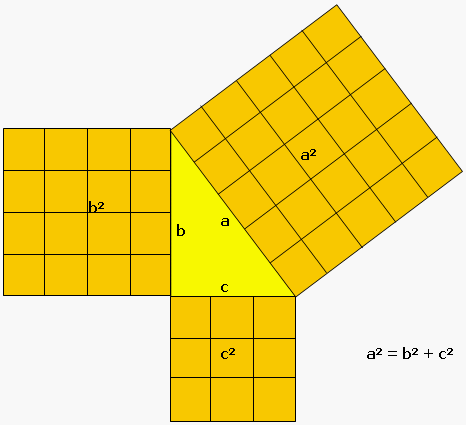

Distanze reali e apparenti: il teorema di Pitagora
Fin dall’antichità, la matematica è stata usata per risolvere problemi pratici legati allo spazio e ai movimenti. Uno degli strumenti più noti è il Teorema di Pitagora, che lega la geometria dei triangoli alla misura delle distanze.
Il teorema di Pitagora afferma che in un triangolo rettangolo, il quadrato costruito sull’ipotenusa è uguale alla somma dei
quadrati costruiti sui due cateti. In altre parole, se si sa la lunghezza di due lati di un triangolo rettangolo, si può calcolare la terza.
Serve a calcolare la cosiddetta linea d'aria, in gergo tecnico linea euclidea: la distanza in linea retta tra due punti.
Tuttavia, nella realtà raramente ci muoviamo lungo una linea retta. Un sentiero di montagna, ad esempio, segue curve, salite e discese
che rendono il percorso molto più lungo e faticoso rispetto alla distanza "in linea d’aria”. Ecco perché la distanza euclidea è solo un punto di partenza: la
matematica ci aiuta a capire che tra ciò che appare breve sulla carta e ciò che viviamo con i nostri passi c’è una differenza sostanziale,. Essere consapevoli di questo divario tra realtà e apparenza
aiuta a valutare correttamente i tempi di percorrenza, il dispendio di energie e a scegliere l’itinerario più adatto alle nostre esigenze. La
matematica, quindi, non resta un concetto astratto ma diventa uno strumento
concreto per orientarsi e camminare meglio.
